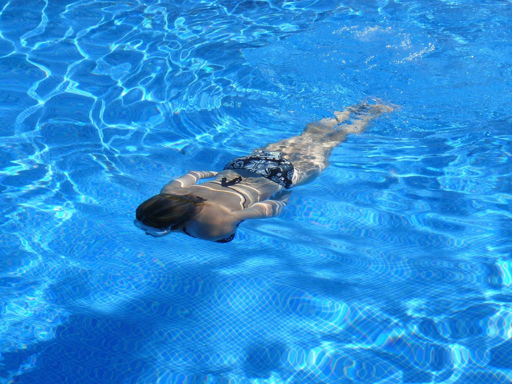
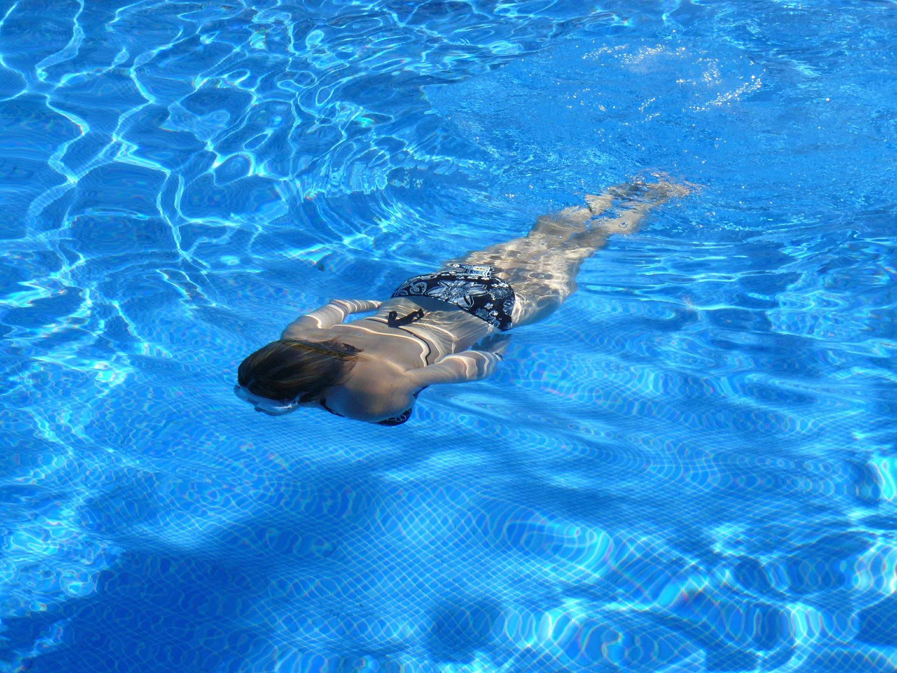

Melhor forma de combater a obsidade é praticando um esporte de sua preferência:
Escolher qual é o melhor exercício para você depende do seu estilo de vida, objetivos e preferências pessoais.
A primeira coisa a considerar é o que é mais prático para ser encaixado na sua rotina. Você pode chegar facilmente a uma academia ou a um centro esportivo? Caso a resposta seja sim, os exercícios na academia e esportes em equipe podem se encaixar bem no seu dia a dia.
Sabemos que muitos de vocês gostam de treinar logo pela manhã, antes de começar o dia de trabalho e afazeres. Procure por academias e centros de esportes 24h ou que abram bem cedinho. Mas, se você mora ou trabalha longe desses lugares, não se preocupe: há muitos exercícios que você pode fazer em casa ou no parque.
Pense no que você deseja obter com os treinos. Você está se esforçando por um objetivo físico específico? Quer conhecer outros atletas e fazer novos amigos? Nesse caso, algum tipo de esporte de equipe pode ser ótimo para você.
 
